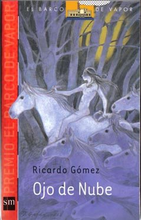
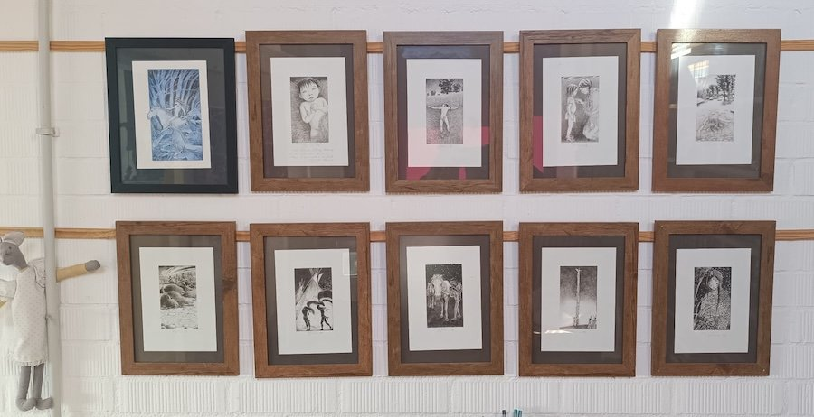
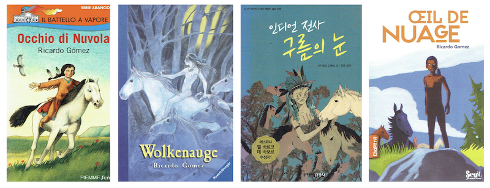

¡Has encontrado el secreto! 🔍

Ojo de Nube es uno de los libros que más satisfacciones me ha dado.
Aparte del Premio Barco de Vapor, ha sido traducido a diferentes idiomas, está en Braille, se estrenó una ópera en Girona con su argumento, se hizo una versión locutada, que guardo con cariño...
Nada más publicarse, Jesús Gabán me cedió los originales de sus ilustraciones, que cuelgan en mi biblioteca.
Y las cubiertas en los diferentes idiomas nos dan idea de distintos gustos estéticos.

